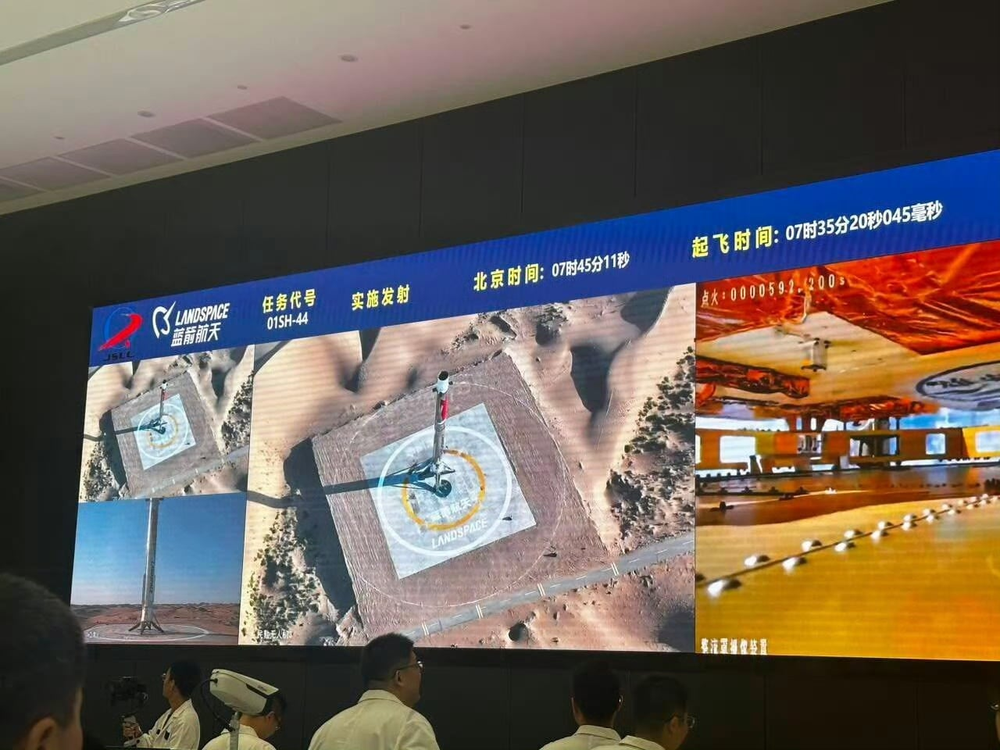
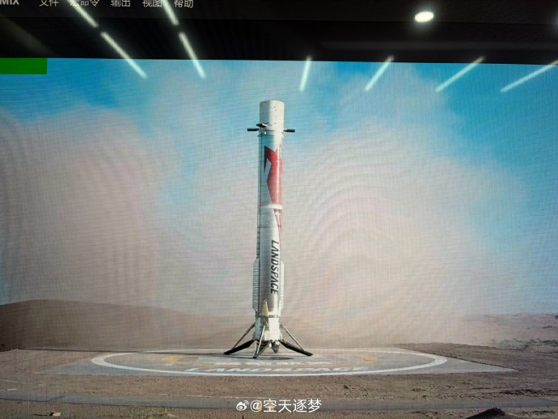
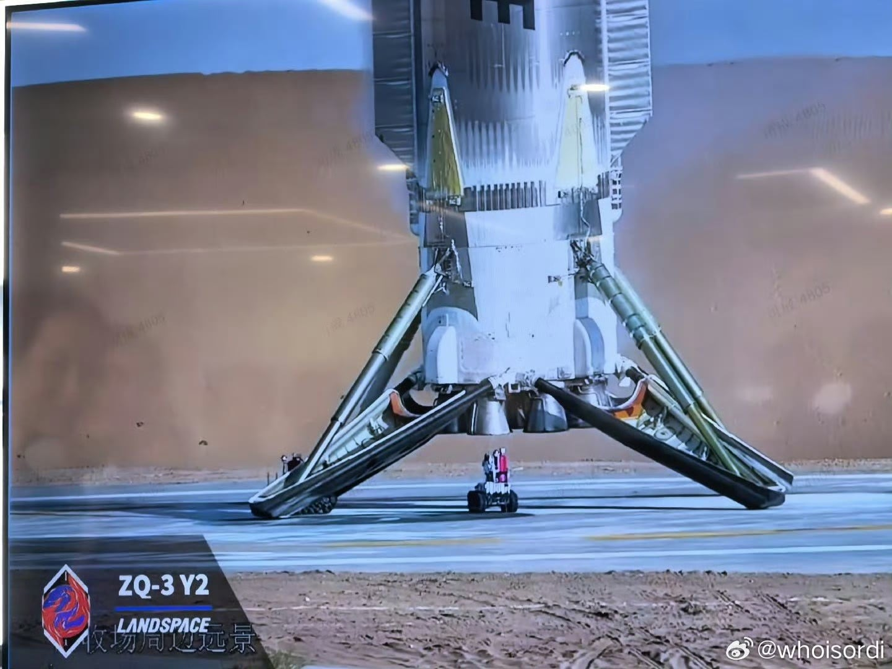

   중국의 민간 우주기업 랜드스페이스 주작3호 작년 12월 회수 실패 오늘 두번째 도전에서 성공함 세계최초로 액체메탄 로켓을 궤도에 올린 회사임
댓글
수집 당시 댓글 23개
서울토박이 · 2 일 전
??? : 저것도 한국기술 훔쳐간거다
피넛버터앤코 · 2 일 전
중뽕 다 거르고 따라오는 속도 미쳤네;;
파이어족은불타오르는발 · 1 일 전
분야 다 떠나서 솔찌 좀 무서움 한국 제조업 일자리도 줄어드는거 아닌가 싶기도...
아몰랑레후 · 2 일 전
국가단위로 몰빵할 수 있는 권한과 재력을 가지고 있으니까 엄청나게 성장하네.
기차말고버스애용 · 2 일 전
주작이네 ㄹㅇ 이름이 주작이네
웨하스 · 2 일 전
대 우주의 시대 열리는거냐
병우 · 2 일 전
중국의 민간 우주발사체 기업 랜드스페이스(LandSpace, 蓝箭航天)는 현재 비상장 스타트업 신분으로, 중국 상하이증권거래소의 기술창업 기업 전용 시장인 커촹반(STAR Market, 科創板) 상장(IPO)을 추진 중입니다.
고추건조기 · 2 일 전
주작이래 주작3호
Enjor · 2 일 전
주작이지?
김펭귄 · 2 일 전
네 주작이라고 하네요
Enjor · 2 일 전
주작일줄알았어
ITEROSJD · 2 일 전
솔직히 중국 키워준건 뭐라해도 미국임 씨발
수평선 · 2 일 전
개발했던 훔쳤던 부럽긴하네. 19세기 열강들의 도시락이였던 나란데...
기타치는테사다 · 2 일 전
사실 근대화이전엔 최고의 문명이였음 ㅋㅋ
번한개붕이 · 2 일 전
저런 과학에 열광하고 선도할수 있다는게 부럽다.... 한국도 저랬던거 같은데
개드립쥬아 · 2 일 전
훔치던 말던 ㅋㅋ 해낸게 중요한거지 한국도 러시아 한테 구걸 햇는데뭔 ㅋㅋ
링케 · 2 일 전
와.. 반도체도 지금은 잘 못해도 나중에 할거같은데 무섭네
카레노래 · 2 일 전
전엔 그물로 받더니 이번엔 제대로 했네
niamea · 1 일 전
와이어로 받은 건 중국우주항천국에서 발사한 거였음 이건 민간 기업이고
존재할수없는닉네임입니다 · 1 일 전
참깨라고 해도 이건 부럽긴 하네... 우린 뭐 여력이 없으니
아주좋아요 · 1 일 전
덩치가 크니 저런거 할 여유도 되는구나
초격아츠 · 1 일 전
날아오르라 주작이여
힐러가체질 · 21 분 전
영상 화질 때문에 그런가....CG같네;;;;;;;;